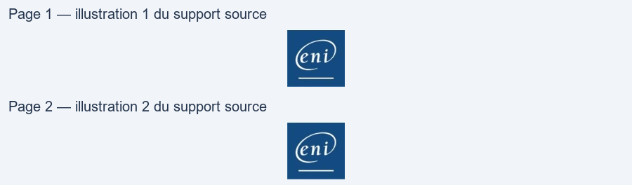

Transcription du document du Drive TSSR. La mise en forme est adaptée au Web ; les compléments IA du portail sont présentés séparément.
Systèmes Clients Microsoft
TP du Module 03 – Interagir avec Windows 10
Sur la VM Win10-XX
Pour une meilleure lisibilité, personnalisez votre fenêtre PowerShell
•
Changez la police et la taille de la police
•
Agrandissez votre fenêtre
Faire le focus dans la fenêtre puis "CTRL + Scroll souris vers le haut" pour agrandir la taille de
la fenêtre et la taille de la police en même temps
Sur la VM Win10-XX, une fois votre fenêtre PowerShell prête, interagissez
avec votre système à l'aide des cmdlets
•
Quelle version de PowerShell est installée sur votre système ?
$PSVersionTable
Ou
Get-Host
•
Affichez le contenu du répertoire courant
o Quelle cmdlet avez-vous utilisée ?
Get-ChildItem
•
Affichez le contenu du répertoire c:\users
o Quelle cmdlet avez-vous utilisée ?
Get-ChildItem -Path C:\Users
•
Affichez la liste des alias PowerShell
o Quelle cmdlet avez-vous utilisée ? Quels sont les alias de la cmdlet Get-
Page 1/2
© ENI – Tous droits réservés
Systèmes Clients Microsoft
ChildItem ?
Get-Alias
Les alias de la cmdlet Get-ChildItem sont : dir, gci, ls
Faites un snapshot TP04 terminé
Sur la VM DiscoveryXX
•
Ouvrez une session avec l'utilisateur adm (Pa$$w0rd) puis interagissez avec votre
système à l'aide des cmdlets.
•
Affichez le contenu du fichier C:\PowerShell\Intro.txt
o Quelle cmdlet avez-vous utilisée ?
Avec la cmdlet Get-Content ou avec les alias gc, type ou cat
On peut trouver la réponse dans le fichier texte à l'aide du bloc-notes ou en tapant dans la
console PowerShell > notepad.exe c:\PowerShell\Intro.txt
•
Dans quel répertoire êtes-vous actuellement ? Déplacez-vous à la racine du lecteur C:\
Set-location c:\
Indice pour trouver : s'aider de la liste des alias
La commande cd a été vue dans la correction du TP précédent : cd -> set-location
Page 2/2
© ENI – Tous droits réservés
